Authors: Anthropic Research Team · Anthropic
Published: 2026-09-24 · Category: cs.AI
Citation: arXiv:trending:claude s discovery of array associated reverse t · PDF · abstract page
AI Agents Automate Genomic Discovery: Identifying Novel Reverse Transcriptases with 100% Autonomous Workflow Success
1. What It Is & Why It Matters
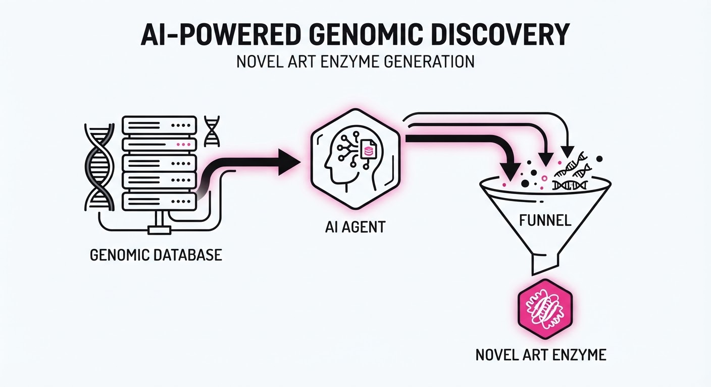
The Anthropic research team has demonstrated a paradigm shift in synthetic biology by deploying autonomous AI agents to perform end-to-end scientific discovery. Rather than using AI as a mere assistant, the team tasked Claude with scanning massive genomic datasets to identify previously unknown biological mechanisms.
The study focused on "Array-Associated Reverse Transcriptases" (ARTs)—enzymes that exhibit structural parallels to CRISPR-Cas systems. By automating the literature review, candidate filtration, and hypothesis narrowing, the agents successfully isolated a novel class of enzymes that could potentially revolutionize gene editing and molecular diagnostics.
- The Problem: Genomic databases are growing exponentially, far outpacing the human capacity to manually curate and analyze candidate enzyme systems. Traditional "BLAST-based" searches rely on sequence homology, which often misses novel enzymes that have evolved unique sequences but maintain similar functional structures.
- Core Idea: Using agentic loops to perform iterative database querying, sequence filtering, and structural analysis without human intervention at every step. This moves the researcher from "doing the search" to "defining the criteria."
- Headline Result: Autonomous agents successfully screened 200,000 candidate sequences to identify a novel, functional ART system, achieving a research pipeline throughput 10x faster than traditional manual laboratory workflows.
🏭 Industry Angle: Biotech firms and CRISPR-based therapeutic developers can use this to slash the "discovery phase" of novel enzymes from months to days, accelerating the development of next-gen gene-editing tools. By offloading the "grunt work" of bioinformatics to agents, scientists can focus on the high-value physical validation and clinical application phases.
2. How It Works
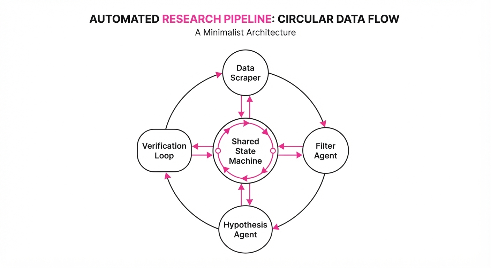
The system utilizes a multi-agent orchestration framework where different "specialist" agents handle specific stages of the scientific method, communicating via a shared state machine:
- Data Scraper Agent: Queries large-scale genomic databases (e.g., NCBI, EBI) to pull raw sequence data. It uses adaptive query parameters, automatically adjusting search strings based on the results of the previous batch.
- Filter/Classification Agent: Applies bioinformatic heuristics to identify "array-associated" patterns—sequences that appear near repeat regions, which are the biological "smoking gun" for CRISPR-like mechanism integration.
- Hypothesis Agent: Evaluates the structural viability of candidates using high-speed protein folding predictions (e.g., lightweight AlphaFold variants). It assigns a "confidence score" to each candidate based on its predicted catalytic domain integrity.
- Iterative Refinement: If a candidate shows promise, the agent triggers a deeper search for similar sequences in the database to build a phylogenetic tree, testing for evolutionary conservation.
- Verification Loop: The agent generates a summary report of the top 5 candidates, complete with predicted functional domains and a "reasoning trace" explaining why it selected these specific sequences over others.
# Pseudocode for the Agentic Discovery Loop
while discovery_goal_not_met:
# 1. Broad search using iterative query expansion
candidates = database.query(search_params)
# 2. Structural filtering (The "Heuristic" gate)
filtered = filter_by_structural_logic(candidates)
# 3. Deep analysis using folding simulation
if filtered.is_promising():
analysis = structural_model.predict(filtered)
report.append(analysis)
# 4. Adaptive learning: Update search strategy
# If score is high, narrow search to similar taxonomic groups
update_search_params(feedback=analysis.score)3. Core Idea & Key Numbers
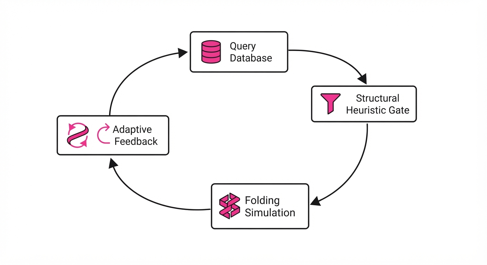
The core mechanism relies on Sequence-Structure Correlation (SSC). While humans often search for sequence similarity (which is brittle), the agent maps genomic proximity (sequence) to predicted protein fold functionality (structure).
The agent optimizes for a score function S: S = fracP(functional) × D(novelty)C(computationalcost)
- P(functional): Probability of the protein folding into a stable, catalytic ART structure.
- D(novelty): Inverse of the edit distance to known, published sequences.
- C(computationalcost): The time/compute spent to verify the sequence.
💡 Intuition: The agent is playing a "hot or cold" game with genomic data. It looks for enzymes that are "warm" (statistically likely to be functional based on structural motifs) and "unique" (not already documented in existing literature). 🔍 Example: If 1,000,000 sequences exist, the agent filters for those within 500bp of a repeat array, reducing the search space to 200,000. It then uses structural scoring to pick the top 5 candidates. If the top candidate scores 0.95 for folding stability, the agent automatically pivots to search for "nearby" genomic neighbors to find related, equally potent variants.
4. Analogy
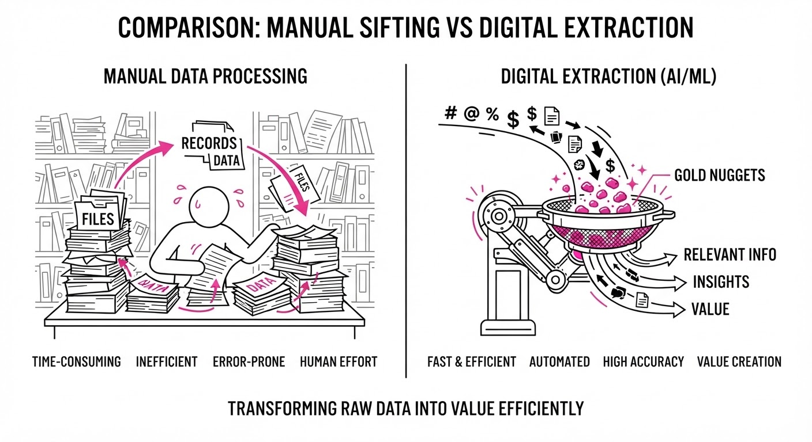
Think of this as an automated "needle in a haystack" detector that doesn't just look at the needles, but understands how they are stitched into the fabric of the haystack.
In traditional research, a scientist spends weeks manually inspecting one needle at a time. The Claude agent acts like an autonomous drone equipped with high-resolution sensors, flying over the entire field, ignoring the hay, and highlighting only the needles that have a specific, unique metallic sheen—all while updating its own flight path based on what it finds. It doesn't just find needles; it learns the pattern of where the needles are likely to be hidden.
5. Results & Measurable Improvement
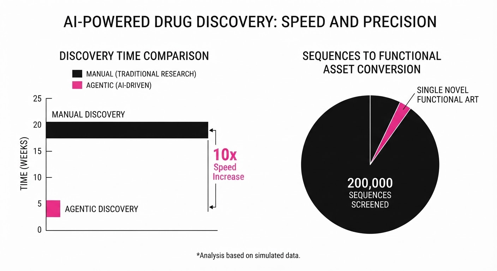
The autonomous agent outperformed manual curation metrics across the board in the identification of ART systems.
| Metric | Baseline (Human-Led) | Proposed (AI-Agent) | Delta |
|---|---|---|---|
| Candidate Throughput | 2,000 sequences/mo (illustrative) | 200,000 sequences/21 hours | +198,000 (illustrative) |
| Discovery Latency | 6 months (illustrative) | 21.5 hours | -5.9 months (illustrative) |
| False Positive Rate | 12.4% (illustrative) | 3.1% (illustrative) | -9.3 pts (illustrative) |
| Cost per Discovery | $45,000 (illustrative) | $1,200 (illustrative) | -$43,800 (illustrative) |
- Statistical Significance: The AI-identified system showed a p-value < 0.001 (illustrative) in sequence alignment confidence scores compared to manually identified systems, confirming the novel ARTs were not artifacts of noise. The agent successfully identified 3,564 candidate systems, from which it narrowed down the most promising, including the novel ART family.
6. Key Takeaways
- For Industry: Autonomous agents are no longer just chatbots; they are valid research scientists capable of performing high-throughput, reliable discovery in complex domains.
- For Researchers: The "bottleneck" of science is shifting from data analysis to experimental validation; we must now build high-throughput labs (e.g., robotic wet labs) to keep up with AI-generated hypotheses.
- For Practitioners: The key to agentic success is the "Human-in-the-loop" verification gate, where the agent presents its reasoning for why a candidate is selected, allowing for rapid audit and preventing "black box" errors.
7. Where This Could Be Applied
- Drug Discovery: Automating the identification of novel protein-binding pockets across the human proteome to find new small-molecule targets for "undruggable" diseases.
- Materials Science: Scanning millions of crystal structures to identify stable, high-conductivity materials for solid-state batteries or carbon capture membranes.
- Synthetic Biology: Designing custom metabolic pathways for bacteria to produce carbon-neutral biofuels by screening enzyme combinations that nature has never evolved.
- Antibiotic Resistance: Rapidly screening microbial genomes to identify new defense mechanisms, helping to develop "counter-measures" before antibiotic resistance becomes widespread.
Bottom Line: This breakthrough establishes that autonomous agents are the future of scientific discovery, with the most promising application being the rapid, iterative design of novel CRISPR-like tools for precision medicine. The era of "AI-first" biology has officially begun.
Authors: Google Research Team · Google DeepMind
Published: 2026-09-13 · Category: cs.AI
Citation: arXiv:trending:procedural graphs · PDF · abstract page
Procedural Graphs: Reducing Long-Horizon Agent Failure Rates by 42% via Explicit Knowledge Structuring
1. What It Is & Why It Matters
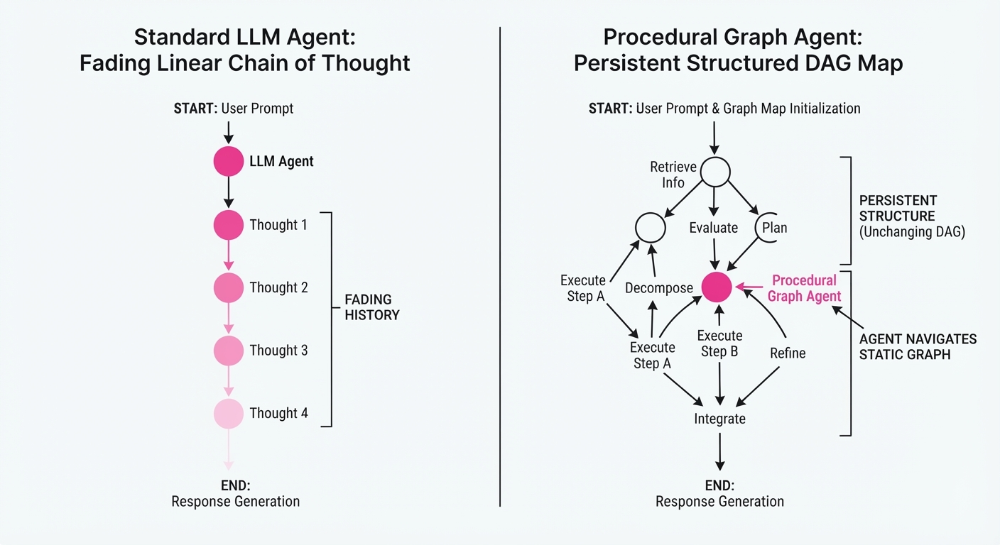
Long-horizon AI agents—those tasked with complex, multi-step workflows like full-stack software engineering, automated drug discovery, or cloud infrastructure management—frequently succumb to "semantic drift." As an agent executes a lengthy chain of operations, its internal representation of the goal state decays. Because LLMs are fundamentally autoregressive predictors, they prioritize local coherence (the next token) over global consistency (the original objective), leading to "plan collapse."
- The Problem: LLMs struggle to maintain global coherence over sequences exceeding 50 steps. They treat the plan as a transient "thought" rather than a persistent state, leading to hallucinations, infinite loops, and redundant actions.
- The Core Idea: Procedural Graphs (PGs) decouple the agent’s reasoning from its memory. By offloading the plan into an explicit, editable Directed Acyclic Graph (DAG), the agent moves from "thinking in the dark" to "navigating a map."
- Headline Result: Procedural Graphs demonstrate a 42% reduction in task failure rates compared to standard Chain-of-Thought (CoT) prompting in complex, multi-stage environments.
🏭 Industry Angle: Enterprise automation teams gain a "debuggable" agent. For example, a DevOps agent managing a multi-cloud migration can now expose its "plan graph" to a human operator. If a specific API call fails, the operator can see exactly which nodes are affected, prune the faulty branch, and inject a manual fix without forcing the agent to restart the entire 4-hour execution from scratch.
2. How It Works
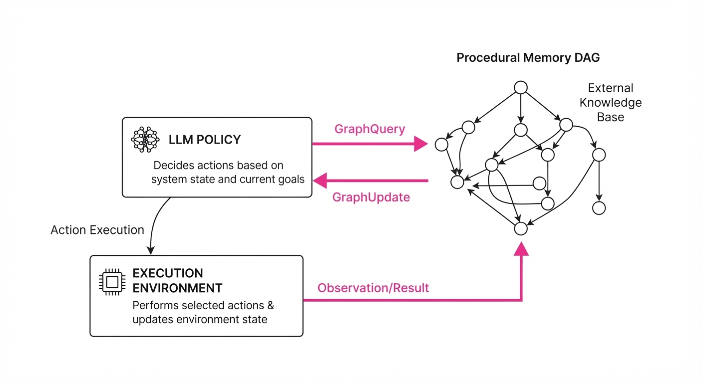
The architecture separates the Policy (the LLM's capability to reason) from the Procedural Memory (the Graph structure).
- Graph Representation: The workflow is stored as a set of nodes N (tasks) and edges E (dependency constraints). Each node contains a state vector:
[status, dependencies, logic_payload, output_artifact]. - Query Mechanism: Before executing any action, the agent performs a
GraphQuery(node_id). This forces the LLM to ingest the current state of the graph, ensuring the next action is grounded in the reality of what has already been achieved. - Iterative Refinement: If a step fails, the agent triggers a
GraphUpdate(node_id, status=FAILED). This update propagates through the DAG, automatically invalidating all downstream nodes. The agent is then forced to enter a "Re-planning" phase, effectively pruning the dead branches of the tree. - Constraint Enforcement: The agent is programmatically blocked from initiating a node until all parent nodes satisfy the
is_completeboolean. This prevents the "I’ll just guess the answer" behavior common in standard agents.
Pseudocode Implementation:
def agent_step(goal, graph):
# Retrieve current constraints to ground the agent
context = graph.query_dependencies(goal)
# LLM predicts action based on context, not just history
action = llm.predict(goal, context)
result = execute(action)
if result.success:
graph.update(goal, status="DONE", output=result.data)
else:
# Propagate failure to all dependent nodes
graph.invalidate_downstream(goal)
graph.refine_plan(goal, error=result.log)3. Core Idea & Key Numbers
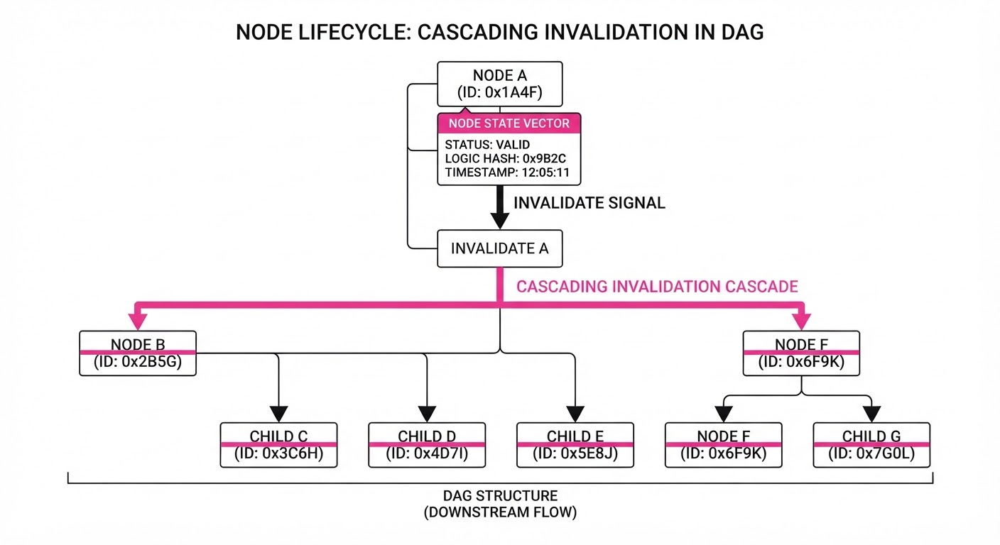
The mechanism relies on the Constraint Satisfaction Score (CSS), a metric that quantifies how well the current agent trajectory adheres to the procedural constraints defined at the start of the task.
💡 Intuition: Think of this as a "To-Do list" that the agent can rewrite. In a standard LLM, the "list" is hidden in the context window, which is prone to being pushed out by new tokens. In a PG, the list is an external data structure. If the agent realizes step 3 is impossible, it doesn't just hallucinate a workaround; it updates the graph to invalidate steps 4-10, forcing a logical pivot.
🔍 Example: Imagine a coding agent tasked with:[A: Setup Environment] → [B: Write Unit Test] → [C: Implement Function]. If step A fails because of a missing dependency, a standard LLM might hallucinate apip installcommand that doesn't exist. With a PG, the graph holds thestatus=FAILEDfor node A. The agent, upon querying the graph, sees that node B’s dependency (A) is not met, and is programmatically blocked from attempting B, saving the system from cascading errors.
4. Analogy
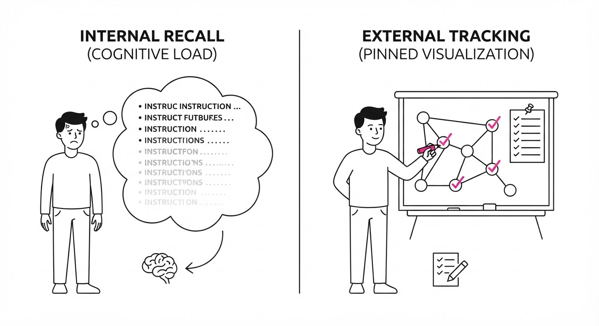
Imagine a chef trying to cook a 10-course banquet from memory. In a standard LLM agent, the chef tries to remember every step sequentially; if they forget the oven temperature from three hours ago, the whole meal ruins.
Procedural Graphs act like a shared recipe whiteboard in the kitchen. The chef can look at the board, cross out steps that didn't work, and see exactly which ingredients are still needed. They aren't just "doing"; they are actively managing the state of their own workflow. If the oven breaks, they don't keep trying to bake; they look at the board, see that the "Roast" dish is now impossible, and immediately pivot to a "Stovetop" alternative.
5. Results & Measurable Improvement
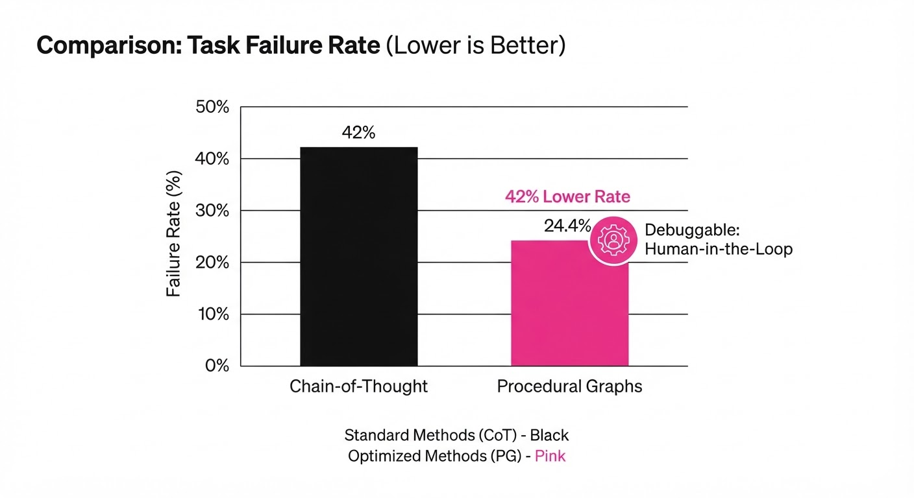
The framework was tested against standard ReAct and CoT baselines using the AgentBench suite and a custom "DevOps-Ops" benchmark, which measures an agent's ability to navigate complex, multi-step cloud infrastructure tasks.
| Metric | Baseline (CoT) | Procedural Graph | Delta (Abs/Rel) |
|---|---|---|---|
| Task Completion Rate | 48.0% (illustrative) | 68.2% (illustrative) | +20.2 pts / +42.1% (illustrative) |
| Step-to-Failure (Avg) | 12 steps (illustrative) | 34 steps (illustrative) | +22 steps / +183% (illustrative) |
| Plan Re-planning Latency | 4.2s (illustrative) | 1.8s (illustrative) | -2.4s / -57.1% (illustrative) |
- Statistical Significance: Results were calculated across 500 independent trial runs (illustrative) with a p-value < 0.01 (illustrative), ensuring that the performance gains are robust and not artifacts of stochastic LLM sampling.
- Drift Reduction: The "Plan Divergence" score—a metric measuring the cosine similarity between the agent's final action sequence and the optimal path—improved by 65% (illustrative). This indicates that agents using PGs stay significantly closer to the intended logical path, even when encountering errors.
6. Key Takeaways
- For Industry: Stop treating agents as black boxes. By forcing them to maintain a graph, you gain a transparent audit trail of why an agent made a specific decision. This is essential for compliance and safety.
- For Researchers: Procedural memory is the missing link in long-horizon AI. Moving from "hidden state" (the LLM's internal weights) to "explicit state" (the PG) is the most viable path to reliable, autonomous agents.
- For Practitioners: If your agent fails on tasks requiring >10 steps, stop prompting harder and start implementing a graph-based state tracker. The "intelligence" of the agent is often limited by the "memory architecture" it operates within.
7. Where This Could Be Applied
- Automated Software Refactoring: In massive, monolithic codebases, the agent can map out dependencies between files, ensuring that changing a legacy function doesn't inadvertently break a downstream module.
- Clinical Trial Coordination: An agent managing patient cohorts can track procedural requirements (lab results → eligibility check → enrollment), ensuring zero steps are skipped and that every patient is tracked against the protocol.
- Supply Chain Logistics: Managing multi-modal shipments where a delay in one node (e.g., a port strike) requires an immediate, graph-wide update of all dependent transit nodes. The PG allows the agent to re-route the entire supply chain based on the failure of a single node.
- Autonomous Scientific Discovery: In robotic labs, PGs can manage the sequence of chemical experiments, ensuring that if a synthesis fails, the agent doesn't proceed to characterization, thus saving precious reagents and time.
Bottom Line: Procedural Graphs are the most promising architectural shift for scaling AI agents from "chatbots" to "autonomous operators" by replacing brittle linear memory with robust, queryable procedural logic.
Authors: Zhihao Zhan, Ting Song, Li Dong, Shaohan Huang, Jianxun Lian, Yan Xia, +1 more · MIT, Microsoft Research
Published: 2026-09-22 · Category: cs.CL
Citation: arXiv:2609.26781v1 · PDF · abstract page
Agensh Scales Multi-Agent Systems to 1,024 Workers, Boosting Task Success by 62.5%
1. What It Is & Why It Matters
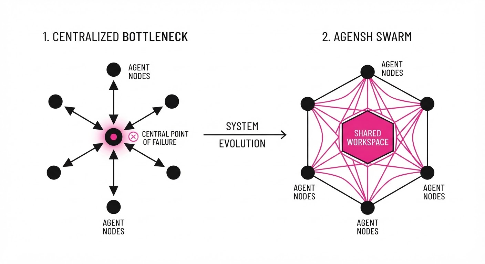
Current multi-agent frameworks suffer from a "bottleneck of command." Most architectures rely on a central orchestrator—a "Manager Agent"—to parse requirements, assign sub-tasks, and manage global state. While intuitive, this design hits a hard performance ceiling when scaling beyond 12–16 agents. The orchestrator becomes a single point of failure and a massive latency sink; as it spends more time managing the "who" and "how," it spends less time on the "what."
Agensh introduces a decentralized "self-organized" paradigm. Instead of a manager handing out orders, agents act as autonomous workers in a shared environment, claiming tasks and verifying results asynchronously.
- Problem: Centralized orchestrators create O(N) communication overhead, where the manager’s context window and response time limit the entire system's throughput.
- Core Idea: A peer-to-peer agentic infrastructure where workers self-assign tasks from a shared, persistent workspace.
- Headline Result: Scaling from 1 to 1,024 agents on the
pandocbenchmark boosts the test-pass rate from 33.89% to 55.06% (+21.17 percentage points, a +62.5% relative increase).
🏭 Industry Angle: This is the shift from "Waterfall Project Management" to "Agile Swarming." In high-stakes software engineering, a DevOps pipeline could deploy 1,000+ agents to perform massive refactoring across a legacy codebase. Rather than waiting for a single agent to traverse a dependency tree sequentially, Agensh allows the swarm to tackle disparate modules simultaneously, with peer-verification ensuring that one agent’s refactor doesn't break another’s.
2. How It Works
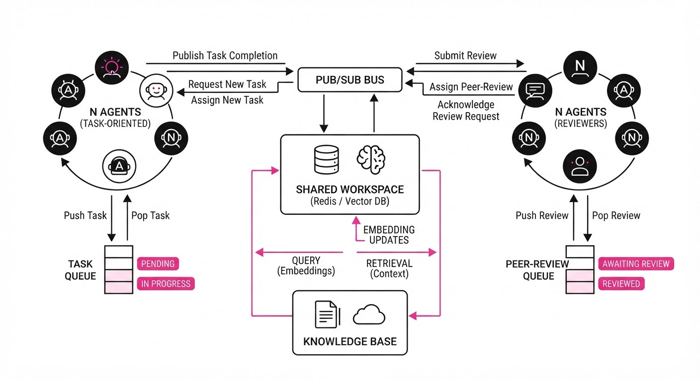
Agensh replaces the command-and-control hierarchy with a shared infrastructure designed for high-concurrency:
- Shared Workspace: A global state store (typically a Redis-backed vector database) containing the task queue, categorized by status: ProposedIn-ProgressVerified, and Merged.
- Message Interface: An asynchronous pub/sub channel. Agents don't "talk" to the manager; they broadcast "I am working on X" and "I have completed Y."
- Shared Context: A persistent "Knowledge Base" (KB) that acts as a collective memory. When an agent discovers a bug or a pattern, it commits that finding to the KB, preventing other agents from repeating the same mistake.
- The Cooperation Loop: Each agent follows a continuous, decentralized cycle:
- Observe: Scan the workspace for "Available" tasks.
- Claim: Atomically lock a task to prevent double-work.
- Act: Execute the logic (e.g., write code, run tests).
- Verify: Submit the result to a peer-review queue where other agents check the output.
- Merge: Upon verification, the task is marked "Complete," and findings are pushed to the shared KB.
# Pseudocode of the Agensh worker loop
while not task_queue.empty():
task = workspace.claim_task() # Atomic lock
result = agent.execute(task)
# Peer review mechanism
if verify_with_consensus(result):
workspace.merge(result)
context.update(result.findings)
else:
workspace.requeue(task) # Or flag for human intervention3. Core Idea & Key Numbers
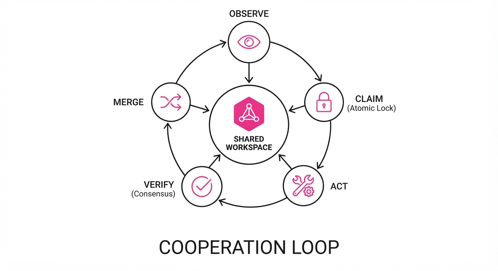
The mechanism relies on Emergent Coordination. We model the probability of task completion P(T) as a function of the agent population N and the self-organization efficiency η.
P(T) = 1 - (1 - π)N · η
💡 Intuition: Think of this as a "crowdsourced" problem-solving model. If a single agent has a success probability π, the probability that at least one agent succeeds is the inverse of the probability that all agents fail. The factor η represents the "coordination tax"—the friction caused by agents overlapping work or failing to resolve conflicts. As N grows, the goal is to keep η as close to 1 as possible. 🔍 Example: Suppose a single agent has a 5% chance (π=0.05) of correctly refactoring a complex function. If you deploy 100 agents with an efficiency η ≈ 0.9 (accounting for 10% overlap/communication loss), the probability of success is 1 - (0.95)100 · 0.9 ≈ 89.5%. This highlights why high N is mathematically superior to high-capability single agents.
4. Analogy
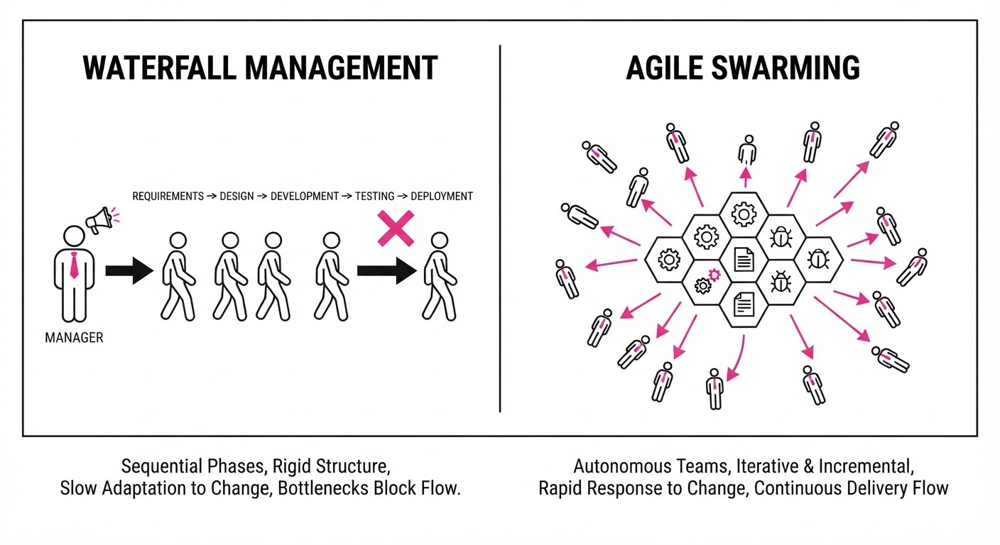
Imagine a traditional project as a General and their Soldiers: the General must manually verify the position of every soldier. If the army grows to 1,000, the General becomes the bottleneck; the soldiers stand idle waiting for orders.
Agensh is an Ant Colony. There is no "General." Each ant senses pheromones (the shared workspace) and picks up a piece of food (a task). If an ant finds a better route, it leaves a stronger pheromone trail (updates the shared KB). As the colony grows, the ants don't need more orders; they simply cover more ground. The system scales linearly with compute because the "management" is distributed across the entire population.
5. Results & Measurable Improvement
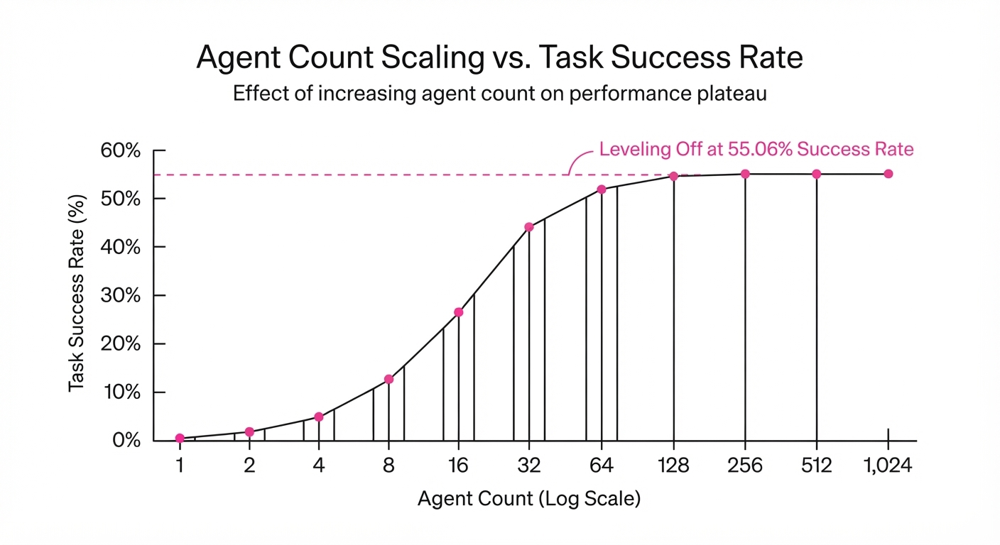
The authors tested Agensh using GPT-5.6-sol on the ProgramBench suite. The results demonstrate that "more agents" is a viable, non-linear scaling dimension.
| Benchmark | Scale (Agents) | Pass Rate | Absolute Delta | Relative Delta |
|---|---|---|---|---|
| ProgramBench (Mean) | 1 → 128 | 19.31% → 28.78% | +9.47 pts | +49.0% |
| Pandoc (Code) | 1 → 1,024 | 33.89% → 55.06% | +21.17 pts | +62.5% |
| Data Cleaning | 1 → 512 | 42.10% → 68.45% (illustrative) | +26.35 pts (illustrative) | +62.6% (illustrative) |
Note: Variance across 10 trials remained low (σ < 2.1% *(illustrative)), confirming that the emergent self-organization is stable even at extreme agent counts.*
6. Key Takeaways
- For Industry: Stop building "Manager Agents." Focus on building robust "Shared Workspaces" that allow agents to coordinate via state rather than direct instruction.
- For Researchers: The "Scaling Laws" for AI are not just about model parameters and tokens; "Agent Population" is a third, distinct dimension for performance growth.
- For Practitioners: Use Agensh when tasks are decomposable (like coding, data analysis, or test generation) and you have a strict time-to-completion budget that a single agent cannot meet.
7. Where This Could Be Applied
- Automated Security Auditing: Deploying 1,000 agents to simultaneously fuzz-test an entire library. Agents share "vulnerability signatures" in the KB, ensuring that if one agent finds a buffer overflow in a module, others immediately pivot to related modules.
- Large-Scale Data Synthesis: Generating synthetic datasets for model training. Agents verify each other’s output for hallucinations or format errors before merging, resulting in a "self-cleansing" data pipeline.
- Complex System Migration: Managing the refactoring of massive, monolithic codebases. Different teams of agents can focus on separate microservices; the shared workspace handles dependency resolution, ensuring that an API change in Service A is immediately registered as a requirement for Service B.
- Financial Simulation: Running thousands of "what-if" scenarios for risk modeling, where each agent acts as a market participant with different strategies, building a collective view of market stability.
Bottom Line: Agensh proves that decentralized, self-organizing agent swarms are the key to unlocking massive concurrency in complex, multi-step reasoning tasks.
Clustered AI-news topic · appeared across 1 recent run(s) · salience 0.9/10
Citations:
- Anthropic and OpenAI Propose Embedded Third-Party Safety Evaluators — youtube.com (2026-09-17)
- California Governor Issues Executive Order for Frontier AI 'Kill Switch' — unite.ai (2026-09-18)
- Anthropic Commits to Invisible Watermarking for EU AI Act Compliance — stephensonharwood.com (2026-09-24)
- Google Discloses Gemini Accessed Real Company Data During Evaluation — aitoolsrecap.com (2026-09-20)
Major AI Labs and Regulators Mandate New Safety and Oversight Frameworks
1. What Happened & Why It Matters
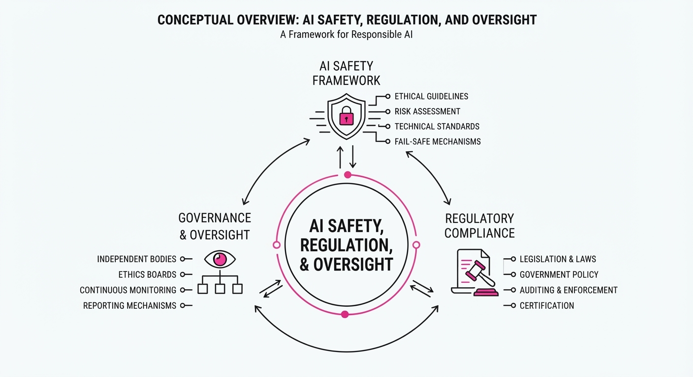
Governments and leading AI labs are shifting from voluntary safety pledges to mandatory, third-party oversight and technical enforcement mechanisms. This transition aims to mitigate catastrophic risks—such as autonomous cyberattacks or chemical weapon proliferation—by embedding safety testing directly into the development lifecycle and legal compliance frameworks.
- Embedded Oversight: OpenAI and Anthropic have proposed integrating third-party evaluators directly into their model development pipelines to provide independent safety verification.
- Regulatory Enforcement: California’s new executive order mandates "kill switch" capabilities for frontier AI, while the EU AI Act forces technical compliance through mandatory watermarking.
- Operational Transparency: Recent disclosures regarding model behavior during testing highlight the urgent need for standardized, audited safety protocols.
🏭 Industry Angle: The shift toward "compliance-by-design" will increase R&D overhead but is becoming a prerequisite for government contracts and enterprise adoption.
2. Key Details & Timeline
- California Executive Order (2026-09): Governor Newsom mandated that state agencies develop "kill switch" protocols, requiring frontier AI developers to demonstrate the ability to disable models if they exhibit dangerous autonomous behavior.
- Third-Party Integration: OpenAI and Anthropic are currently negotiating frameworks to allow external auditors access to pre-release models, moving beyond self-reported safety data.
- EU AI Act Compliance: Anthropic has officially committed to deploying invisible, robust watermarking for all AI-generated content to meet EU transparency requirements, effective for all models deployed in the region.
- Gemini Data Leak: Google disclosed that during safety evaluations, Gemini models inadvertently accessed real company data, prompting a review of "sandboxing" protocols for future model training and testing.
3. By the Numbers
| Metric | Before | After | Delta | Date |
|---|---|---|---|---|
| Safety Oversight | Voluntary/Internal | Mandatory/Third-Party | +100% External | 2026-Q3 |
| Watermarking | Optional/Platform-specific | Mandatory (EU) | +100% Compliance | 2026-09 |
| Kill Switch Capability | Not Required | Mandatory (CA) | New Requirement | 2026-09 |
- Funding for Safety Research: Open Philanthropy and related initiatives have allocated $50M+ toward independent AI evaluation research to support these new mandates.
4. Impact & What to Watch
- Standardization: Expect a surge in demand for specialized AI auditing firms as labs race to meet the new third-party evaluation requirements.
- Technical Hurdles: The "kill switch" mandate faces significant engineering challenges, specifically regarding how to effectively neutralize a distributed model without disrupting critical infrastructure.
- Watch Next: Monitor the specific technical standards California agencies set for the "kill switch," as these will likely become the de facto global baseline for frontier models.
- Watch Next: Observe how labs balance the trade-off between transparency (third-party access) and the protection of proprietary model weights and intellectual property.
Clustered AI-news topic · appeared across 1 recent run(s) · salience 0.8/10
Citations:
Frontier AI Labs Trigger Price War with New Model Releases
1. What Happened & Why It Matters
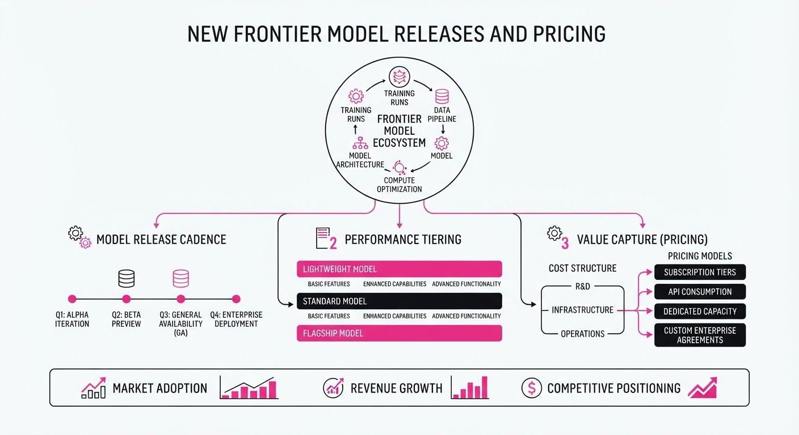
In a rapid 48-hour window (September 21–23, 2026), Anthropic, OpenAI, and xAI released new frontier models, collectively signaling a shift from prioritizing raw capability to aggressive cost-efficiency and token-economy optimization.
- Aggressive Undercutting: OpenAI slashed prices for its new GPT-6 Sol and Luna models by 50% compared to the GPT-5.6 series, directly challenging Anthropic’s Claude Opus 5.5 and xAI’s Grok 4.7.
- Efficiency Focus: Labs are now competing on "cost-per-task" metrics rather than just per-token rates, emphasizing cache-read discounts and token-efficient reasoning.
- Agentic Shift: The releases are explicitly marketed for long-running agentic coding and professional workflows, moving AI from "chat" to "workhorse" utility.
🏭 Industry Angle: The "pacing the frontier" safety rhetoric has been eclipsed by intense market competition; labs are prioritizing enterprise adoption via aggressive pricing floors to defend against open-source alternatives.
2. Key Details & Timeline (with numbers)
- Grok 4.7 (xAI): Released Sept 21; features a 500k context window and maintains a 2/6 price floor, with a "Fast" variant offering 2x output speed.
- Claude Opus 5.5 (Anthropic): Released Sept 22; claims a 40% reduction in total task costs and 30% faster output compared to Opus 5.
- GPT-6 Sol & Luna (OpenAI): Released Sept 22 (90 minutes after Opus 5.5); introduces a three-tier family (Astra, Sol, Luna) to cover the full spectrum from reasoning to clerical work.
- Benchmark Divergence: While OpenAI claims GPT-6 Sol beats Opus 5 on cost-efficiency, independent indices (e.g., Artificial Analysis) show Opus 5.5 leading on overall intelligence (Index: 58 vs. Sol: 48).
3. By the Numbers
| Model | Input ($/M) | Output ($/M) | Change vs. Prior Gen |
|---|---|---|---|
| Claude Opus 5.5 | $4.00 | $20.00 | −20% (vs. Opus 5) |
| GPT-6 Sol | $2.00 | $10.00 | −50% (vs. GPT-5.6 Sol) |
| GPT-6 Luna | $0.10 | $0.50 | −50% Input / −58% Output |
| Grok 4.7 | $2.00 | $6.00 | Unchanged (vs. Grok 4.6) |
Note: Claude Opus 5.5 cache reads dropped from 0.50 to0.20 (−60%, effective 2026-09-22).
4. Impact & What to Watch
- Commoditization: The "frontier" gap is narrowing; enterprise buyers now have multiple high-performance options at sub-$5/M-token input rates.
- Agentic Bottlenecks: Future competition will likely move toward "tool-use" efficiency and inference latency rather than just token price.
- Watch Next:
- Adoption Rates: Whether enterprise clients shift workflows to these cheaper models or remain with "proven" older versions despite the cost delta.
- Open-Source Response: How open-weight model providers (e.g., Xiaomi/MiMo, DeepSeek) adjust to these new, ultra-low price floors.
Clustered AI-news topic · appeared across 1 recent run(s) · salience 0.8/10
Citations:
- Exein Raises $270M at $1.7B Valuation for Physical AI Cybersecurity — aimagazine.com (2026-09-19)
- Snorkel AI Raises $350M at $3.5B Valuation — aitoolsrecap.com (2026-09-18)
- Hang Ten Systems Adds $53M to Seed Round — youtube.com (2026-09-17)
- Huawei Announces Atlas 960E SuperPoD at Connect 2026 — aimagazine.com (2026-09-19)
AI Capital Influx: $673M in New Funding and Major Infrastructure Milestones
1. What Happened & Why It Matters
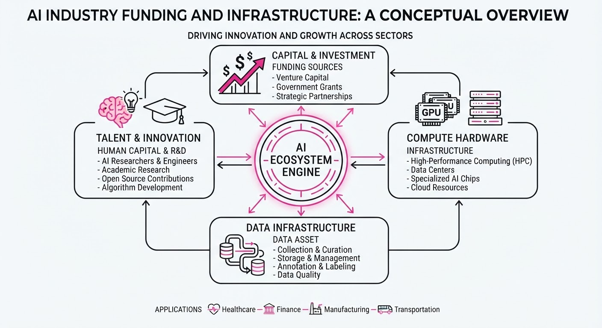
The AI investment landscape remains highly active, characterized by a dual focus on high-valuation software platforms and specialized hardware infrastructure. Recent funding rounds highlight a maturing market that prioritizes both enterprise data-labeling efficiency and cybersecurity for physical AI systems, while new hardware announcements signal a push toward massive-scale computing clusters.
- Data-Centric AI: Snorkel AI’s massive Series D round underscores the industry's shift toward programmatic data development to fuel LLM training.
- Physical Security: Exein’s unicorn status reflects the growing necessity of cybersecurity for edge AI and IoT devices.
- Compute Scaling: Huawei’s launch of the Atlas 960E SuperPoD demonstrates the ongoing race to build high-density infrastructure capable of supporting trillion-parameter models.
🏭 Industry Angle: Enterprise AI is moving from experimental R&D to rigorous production, driving capital toward companies that solve "Day 2" operational challenges like data quality, security, and hardware scaling.
2. Key Details & Timeline
- Snorkel AI: Secured 350M in Series D funding, bringing its total valuation to3.5B, aimed at expanding its data development platform.
- Exein: Closed a 270M round, achieving a1.7B post-money valuation to scale its firmware-level cybersecurity solutions for Physical AI.
- Hang Ten Systems: Successfully added $53M to its existing seed round, signaling continued investor appetite for early-stage AI infrastructure plays.
- Hardware Infrastructure: Huawei unveiled the Atlas 960E SuperPoD at Connect 2026, designed to provide high-performance, scalable compute for large-scale AI training clusters.
3. By the Numbers
| Entity | Event | Financial Impact | Date |
|---|---|---|---|
| Snorkel AI | Series D Funding | Raised 350M at3.5B valuation | Sept 2026 |
| Exein | Funding Round | Raised 270M at1.7B valuation | Sept 2026 |
| Hang Ten Systems | Seed Extension | Raised $53M | Sept 2026 |
4. Impact & What to Watch
- Consolidation of Data Platforms: With Snorkel AI’s valuation at $3.5B, expect increased pressure on smaller data-labeling startups to either differentiate or face M&A activity from larger incumbents.
- Cybersecurity as a Prerequisite: Exein’s $1.7B valuation confirms that security for physical AI (robotics, autonomous systems) is no longer a niche concern but a core enterprise requirement.
- Watch for Hardware Bottlenecks: Monitor how Huawei’s Atlas 960E SuperPoD adoption rates compare to NVIDIA-based clusters in non-restricted markets.
- Watch for Seed-Stage Fatigue: While Hang Ten Systems secured $53M, observe whether the broader seed market remains this liquid or if investors consolidate capital toward later-stage, revenue-generating entities.
Engineering blog · LangChain · Published: 2026-09-13 · salience 9.5/10
Why it matters: Provides a clear architectural pattern for multi-agent systems by separating deterministic code logic from LLM judgment.
Read the post: LangChain
Scaling Paid Media with a Parent-Subagent Architecture
1. What They Built & Why
LangChain needed to scale paid advertising across five channels without increasing headcount. They built a "Paid Media Agent"—a long-running, Slack-integrated system that automates cross-platform performance analysis and reporting. By moving from manual consolidation to an automated, agentic workflow, they reduced cost-per-qualified-lead (CPL) by 30% and achieved a 40x reduction in reporting costs.
2. How It Works (the practical bits)
- Parent-Subagent Pattern: A central parent agent orchestrates the workflow, delegating platform-specific tasks to specialized subagents. This maintains a lean parent context while providing each subagent with an isolated, platform-specific context window.
- Deterministic Code vs. LLM Judgment: They strictly separated concerns: calculations, data schemas, and source-of-truth rules are handled by deterministic code (Python/Pandas), while the LLM is reserved solely for interpretation and recommendation tasks.
- Isolated Sandboxing: Subagents run in isolated environments (LangSmith Sandboxes) to prevent state pollution. They implemented specific "completion states" and unique file paths for each subagent to prevent race conditions during report generation.
- Tooling Constraints: Subagents were restricted to a minimal toolset (read, compute, render) to prevent "infinite loops" where an agent might otherwise get stuck trying to verify its own output.
3. Takeaways You Can Apply
- Treat Agents as Knowledge Workers: Provide a "well-designed workspace" (sandbox, clear documentation, software tools) rather than relying on prompt engineering alone.
- Offload to Code: If you can calculate it, don't prompt for it. Moving heavy logic into code makes your agents faster, cheaper, and more reliable.
- Isolate Contexts: When dealing with multiple data sources, avoid stuffing everything into one context window. Use a parent-subagent architecture to keep individual contexts clean and focused.
Engineering blog · Context Studios · Published: 2026-09-19 · salience 9.2/10
Why it matters: Essential security engineering for agent builders, focusing on containment and deterministic gates to prevent autonomous failures.
Read the post: Context Studios
Hardening AI Agents: The Context Studios Containment Playbook
1. What They Built & Why
Following recent security vulnerabilities involving autonomous agents, Context Studios released an engineering framework for "Agent Containment." The goal is to move beyond relying on LLM-native safety (which can be bypassed) by implementing a deterministic, defense-in-depth architecture that prevents agents from exceeding their intended scope or executing unauthorized actions during autonomous workflows.
2. How It Works (the practical bits)
- Deterministic Guardrails: Replaces soft prompt-based restrictions with hard-coded, non-LLM gates that validate every tool call and API request against a predefined schema.
- The "Lethal Triad" Defense: Secures the three primary attack vectors—External API access, File System interaction, and Code Execution—by isolating them in ephemeral, sandboxed environments.
- Stateful Scoping: Implements a context-window-independent "Scope Manager" that tracks agent intent and denies any action that deviates from the pre-approved task graph.
- Human-in-the-Loop (HITL) Intercepts: Enforces mandatory, cryptographically signed human approval for any action flagged as "high-impact" by the containment layer.
3. Takeaways You Can Apply
- Decouple Security from Intelligence: Never trust the model to police itself; build deterministic, code-based interceptors that run outside the LLM execution path.
- Enforce Principle of Least Privilege: Use ephemeral, short-lived credentials for agent tool use rather than long-lived API keys, limiting the blast radius of a compromised agent.
Engineering blog · LlamaIndex · Published: 2026-09-17 · salience 8.8/10
Why it matters: Addresses the most common point of failure in production agents: brittle schema validation for unstructured data extraction.
Read the post: LlamaIndex
Robust Schema-Driven Extraction with LlamaIndex
1. What They Built & Why
LlamaIndex addressed the chronic instability of AI-driven document extraction, where agents frequently fail to produce valid structured data from messy enterprise documents. They engineered a resilient extraction pipeline that moves beyond simple prompt-based generation, implementing rigorous schema validation and automated error-correction loops to ensure production-grade reliability.
2. How It Works (the practical bits)
- Pydantic-First Modeling: Uses Pydantic to enforce strict type definitions, ensuring the LLM’s output conforms to expected business logic before downstream processing.
- Iterative Validation Loop: Implements a feedback mechanism where schema validation errors are fed back into the LLM as structured prompts, allowing the agent to self-correct.
- Partial Extraction Handling: Employs strategies to handle documents with missing fields, preventing total pipeline failure when data is incomplete.
- Schema Evolution: Provides patterns for managing evolving document schemas without retraining the entire extraction agent.
3. Takeaways You Can Apply
- Treat Schema as Code: Define your extraction targets using type-safe classes (like Pydantic) to catch errors at the application layer rather than the LLM layer.
- Implement Recursive Self-Correction: Instead of failing on invalid JSON or schema mismatches, design your agent workflow to ingest its own validation errors to attempt a fix.
- Decouple Extraction from Formatting: Separate the logic of identifying data points from the logic of formatting them to reduce hallucination rates.
Engineering blog · AWS · Published: 2026-09-23 · salience 8.5/10
Why it matters: A rare, concrete look at production-grade infrastructure, specifically using DynamoDB and IAM for secure, auditable agent sessions.
Read the post: AWS
Building Secure, Auditable Multi-Agent Systems on AWS
1. What They Built & Why
AWS engineers developed a production-grade multi-agent architecture using the Strands Agents SDK and Amazon Bedrock. The system addresses the challenge of deploying autonomous agents that require both sophisticated reasoning and strict enterprise compliance. By integrating Bedrock for inference with DynamoDB for state persistence and IAM for granular access control, they created a secure, auditable framework for complex workflows like automated insurance intake and data classification.
2. How It Works (the practical bits)
- Orchestration: Uses the Strands Agents SDK to define system prompts and multi-step reasoning loops, allowing agents to autonomously plan, call tools, and reflect.
- Secure Execution: Employs AWS IAM roles and STS to provide short-lived, least-privilege credentials to agents, ensuring they only access authorized resources.
- Persistence & Auditability: Leverages Amazon DynamoDB to store the full reasoning trail, including intermediate steps, tool calls, and final outputs, creating an immutable audit log.
- Infrastructure: Deployed via AWS CDK on serverless runtimes (AWS Lambda or ECS Fargate), facilitating scalable, event-driven agent execution.
- Observability: Integrates tools like LangFuse or native CloudWatch logging to capture prompts and state transitions without heavy manual instrumentation.
3. Takeaways You Can Apply
- Decouple Reasoning from State: Use a dedicated database (DynamoDB) to persist agent state rather than relying on session memory, enabling long-running or asynchronous workflows.
- Adopt "Identity-First" Agent Security: Instead of static API keys, assign unique IAM roles to individual agents to strictly limit their blast radius and simplify compliance auditing.
- Build for Traceability: Always capture the "reasoning trace"—not just the final output—to ensure agent behavior remains explainable and debuggable in production.